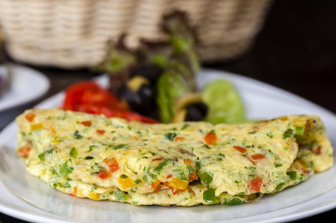

Omllette

Delicious breakfast and healthy as well
Ingredients :
- 2 EGGS
- 1-2 SPOONS OF BUTTER
- 1 SPOON OF MILK
- SOME SALT
- SOME PEPPER
How you do it :
- Break eggs, mix with a fork, adding water or milk, salt and pepper.
- Put a dry frying pan on very low heat, then increase the flame, heat the butter
(be careful not to brown it), pour in
the egg mixture.
- Fry uncovered over high heat until the edges of the omelet are set.
- Very gently turn to the other side, fry for a while. Serve with side dishes.